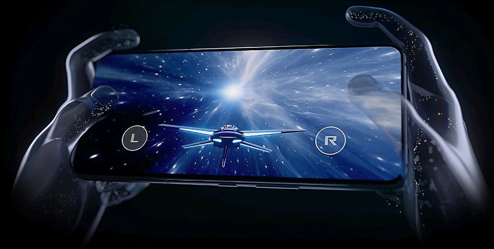

CARACTERISTICAS
RENDIMIENTO
MediaTek Dimensity 9000+
REFRIGERACIÓN
Diseño térmico optimizado con AeroActive Cooler 6
ESTILO
Libera el espíritu del cosmos
ESTÉTICA
Pon de relieve tu individualidad
IMAGEN
Pantalla AMOLED de 165Hz

CONTROL
Múltiples entradas para un control total
HYPERENGINE
Experiencia de juego fluida

PERZONALIZACIÓN
Seleccionados y creados para verdaderos gamers
MODERNO
Presume de estilo gaming
AUDIO
Altavoces estéreo dobles
BATERÍA
6000mAh
CÁMARA
Sistema emblemático de triple cámara